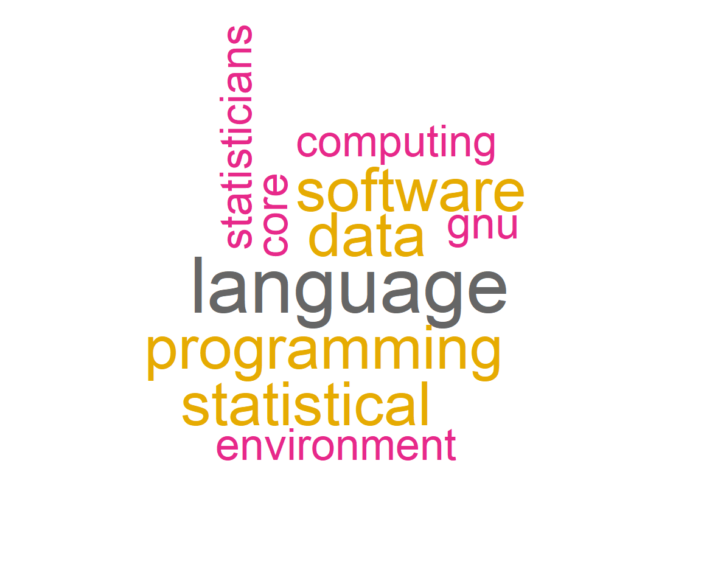

Chapter 6 Text Mining
6.1 Learning Goals
- Conceptual Skills:
- What text data is and where to get text data from.
- What API is and how to use an API inside R.
- What tidy (text) data format is.
- Data Skills:
- Install packages from GitHub via
devtools. - Clean text data with
tidytext, e.g.str_remove_all(),str_to_lower(),str_trim(). - Create tidy text format with
unnest_tokens() - Removing stop words
anti_join(). - Data Visualization: Term Frequency as Wordcloud and barchart.
- Install packages from GitHub via
Text data usually consists of documents which can represent words, sentences or even paragraphs of free flowing text. The inherent unstructured (no neatly formatted data columns!) and noisy nature of textual data makes it harder for data analysts to directly work on raw text data.
This material also introduces new features for R markdown reports:
- Code Folding https://bookdown.org/yihui/rmarkdown-cookbook/fold-show.html
- Tab Sets https://bookdown.org/yihui/rmarkdown-cookbook/html-tabs.html
In your YAML header you can set an option under html_document: like code_folding: hide. Be aware of the necessary spacing in the html options. You can add the {.tabset} option to a headline and starting tab setting here. You end tab setting by an empty headline like #### {-}. In between you need to specify sub-headlines (at least one more hash-tag).
6.2 Get Text
6.2.0.1 Text datasets
There are various built-in datasets for text (e.g. janeaustenr package).
6.2.0.1.0.1 Jane Austin books
This table gives a list of all the Jane Austin books included and their rownumbers.
library(janeaustenr)
table(austen_books()$book)
#>
#> Sense & Sensibility Pride & Prejudice Mansfield Park Emma
#> 12624 13030 15349 16235
#> Northanger Abbey Persuasion
#> 7856 83286.2.0.1.0.2 Select a specific book.
You can read entire books in R.
library(tidyverse)
austen_books() %>%
filter(book == "Emma") %>%
filter(row_number() > 10, row_number() < 20)
#> # A tibble: 9 × 2
#> text book
#> <chr> <fct>
#> 1 "" Emma
#> 2 "CHAPTER I" Emma
#> 3 "" Emma
#> 4 "" Emma
#> 5 "Emma Woodhouse, handsome, clever, and rich, with a comfortable home" Emma
#> 6 "and happy disposition, seemed to unite some of the best blessings of" Emma
#> 7 "existence; and had lived nearly twenty-one years in the world with ver… Emma
#> 8 "little to distress or vex her." Emma
#> 9 "" Emma6.2.0.2 Ask people: Digital Literacy at Viadrina
We ask people for their data, opinion or evaluation.
Quick polls and questionnaires can be build in various software, like Zoom or Google.9 There are various provider for more sophisticated surveys (useful in research and theses), e.g. SoSci Survey or SurveyMonkey.10

6.2.0.2.0.2 All the data
Feather is a file format that can read and write faster. Storage is often reduced. The arrow package cannot read files from a web source (http). Download the file and use a local absolute or relative path to the data.
library(arrow)
digital <- read_feather("data/Digital_Literacy_EN.feather")
library(tidyverse)
glimpse(digital)
#> Rows: 77
#> Columns: 12
#> $ Research <int> 5, 5, 4, 4, 5, 4, 4, 5, 4, 2, 4, 4, 2, 4, 4, 5, 3, 4, 5, 3…
#> $ Interaction <int> 5, 5, 3, 4, 1, 5, 4, 5, 5, 5, 5, 5, 5, 3, 4, 5, 4, 4, 5, 4…
#> $ Identity <int> 3, 3, 3, 4, 3, 4, 2, 5, 5, 5, 3, 4, 4, 3, 4, 5, 2, 4, 5, 4…
#> $ Content <int> 5, 4, NA, 3, 3, 4, 2, 4, 4, 1, 3, 4, 4, 4, 2, 3, 2, 4, 3, …
#> $ Privacy <int> 4, 3, 2, 2, 5, 3, 2, 5, 4, 3, 4, 4, 3, 2, 1, 2, 2, 5, 3, 4…
#> $ Problems <int> 3, 2, 1, 4, 3, 2, 2, 5, 3, 4, 4, 3, 3, 2, 3, 4, 4, 5, 2, 3…
#> $ Teaching <int> 2, 4, 3, 4, 5, 1, 3, 5, 5, 5, 3, 4, 5, 4, 1, 5, 2, 5, 4, 4…
#> $ Skills <chr> "Excel", "Neben den grundlegenden Komputerkentnissen noch …
#> $ Faculty <fct> Econ, Econ, Econ, Econ, Econ, Econ, Econ, Econ, Econ, Econ…
#> $ Level <chr> "Master", "Master", "Master", "Bachelor", "Bachelor", "Bac…
#> $ Gender <fct> Female, Male, Female, Female, Female, Male, Male, Female, …
#> $ Skills_EN <chr> "Excel", "Besides the basic computer skills, some basic kn…6.2.0.2.0.3 The Open Answers
In the digital data there are German and English answers to the question what digital competencies are required by students at Viadrina.
head(digital$Skills)
#> [1] "Excel"
#> [2] "Neben den grundlegenden Komputerkentnissen noch eininge Grundkentnissen von Microsoft und Google Leistungen (MS Office, Google drive etc.). Außerdem gibt's an Viadrina keine hohe digitale Voraussetzungen. "
#> [3] ""
#> [4] "Ganz viel, ich habe das Gefühl dass meine Mitstudierenden keine Ahnung haben wie man richtig mit digitalen Medien umgeht und auch Programmen wie Office"
#> [5] ""
#> [6] "Digital research, Data visualisation / Content creation, Digital security and Legal literacy in the respective area"6.3 Translate Everything To English
6.3.0.1 Deepl API
Use Deepl to translate all German responses in digital$Skills into English. There are options:
- Use website manually https://www.deepl.com/translator
- Use Deepl API and R in a programmatic way https://www.deepl.com/pro##developer
An application programming interface (API) is another piece of software that connects computer programs. It is a type of software interface, offering a service to other pieces of software.
Registration for the track DeepL API Free at https://www.deepl.com/pro##developer requires credit card information for identity check (but no payment). The documentation tells what is included in this pricing model: DeepL API Free is a variant of our DeepL API Pro plan that allows developers to translate up to 500,000 characters per month for free. https://support.deepl.com/hc/en-us/articles/360021200939-DeepL-API-Free
6.3.0.2 Deeplr
Use deeplr, a package that offers an interface to the Deepl API (use free version). Some packages are not yet released on the official CRAN server. Good packages can be found on GitHub.
Use devtools to install this package from the GitHub repo. The aim of devtools is to make package development easier by providing R functions that simplify and expedite common tasks.
#install.packages("devtools")
#devtools::install_github("zumbov2/deeplr")Using the API inside R requires at least one authentication key (password).
Do not show or store your auth keys in a script.
deeplr::usage2("KEY")#> $character_count
#> [1] 0
#>
#> $character_limit
#> [1] 500000## deeplr::translate2(
## text = "R ist eine freie Programmiersprache für statistische Berechnungen und Grafiken. Sie wurde 1992 von Statistikern für Anwender mit statistischen Aufgaben neu entwickelt.",
## target_lang = "EN",
## auth_key = "KEY"
## )#> [1] "R is a free programming language for statistical calculations and graphics. It was newly developed in 1992 by statisticians for users with statistical tasks."6.4 Text Analysis
For this analysis we focus on the intro information on R from English Wikipedia.
library(wikifacts)
R_EN <- wiki_define('R (programming language)')
R_EN
#> R (programming language)
#> "R is a programming language for statistical computing and graphics supported by the R Core Team and the R Foundation for Statistical Computing. Created by statisticians Ross Ihaka and Robert Gentleman, R is used among data miners, bioinformaticians and statisticians for data analysis and developing statistical software. Users have created packages to augment the functions of the R language.\nAccording to user surveys and studies of scholarly literature databases, R is one of the most commonly used programming languages used in data mining. As of March 2022, R ranks 11th in the TIOBE index, a measure of programming language popularity, in which the language peaked in 8th place in August 2020.The official R software environment is an open-source free software environment within the GNU package, available under the GNU General Public License."6.4.0.1 Cleaning
Load the tidytext package. We summarize individual tasks like removing digits, punctuation, whitespaces and seting everything to lower case in the clean_text() function. There is a newline operator \n left. You can replace it with uncommenting the last command.
library(tidytext)
## text cleaning
clean_text <- function(x) {
x %>%
## Remove digits
str_remove_all("[:digit:]") %>%
## Remove punctuation
str_remove_all("[[:punct:]]") %>%
## Make everything lowercase
str_to_lower() %>%
## Remove any trailing whitespace around the text
str_trim("both") ##%>%
##str_replace_all("[\r\n]" , " ")
}#> [1] "r is a programming language for statistical computing and graphics supported by the r core team and the r foundation for statistical computing created by statisticians ross ihaka and robert gentleman r is used among data miners bioinformaticians and statisticians for data analysis and developing statistical software users have created packages to augment the functions of the r language\naccording to user surveys and studies of scholarly literature databases r is one of the most commonly used programming languages used in data mining as of march r ranks th in the tiobe index a measure of programming language popularity in which the language peaked in th place in august the official r software environment is an opensource free software environment within the gnu package available under the gnu general public license"6.4.0.2 Tidytext Format
Tidy data has a specific structure:
- Each variable is a column
- Each observation is a row
We thus define the tidy text format as being a table with one-token-per-row. A token is a meaningful unit of text, such as a word, that we are interested in using for analysis, and tokenization is the process of splitting text into tokens.
tidytext <- R_EN_clean %>%
as_tibble() %>%
unnest_tokens(word, value) %>%
count(word, sort=TRUE)
head(tidytext)
#> # A tibble: 6 × 2
#> word n
#> <chr> <int>
#> 1 the 10
#> 2 r 8
#> 3 and 6
#> 4 in 5
#> 5 of 5
#> 6 is 46.4.0.3 Stopwords
Stop words are a set of commonly used words in a language. Examples of stop words in English are “a”, “the”, “is”, “are” and etc. Stop words are commonly used in Text Mining and Natural Language Processing (NLP) to eliminate words that are so commonly used that they carry very little useful information.
data(stop_words)
tidytext <- tidytext %>%
anti_join(stop_words)
head(tidytext)
#> # A tibble: 6 × 2
#> word n
#> <chr> <int>
#> 1 language 4
#> 2 data 3
#> 3 programming 3
#> 4 software 3
#> 5 statistical 3
#> 6 computing 26.5 Little bit of Scraping
library(rvest)
read_html("https://en.wikipedia.org/wiki/R_(programming_language)") %>%
## extract paragraphs
html_nodes("p") %>%
## extract text
html_text() %>%
## clean
clean_text() %>%
as_tibble() %>%
## tidy text
unnest_tokens(word, value) %>%
count(word, sort=TRUE) %>%
## stopwords
anti_join(stop_words) %>%
## select first
top_n(20) %>%
## reorder
mutate(word = reorder(word, n)) %>%
## create frequency plot
ggplot(aes(x=word, y = n)) +
geom_col() + coord_flip() +
ggtitle("Term Frequency of top 20 clean words in Wikipedia aRticle")